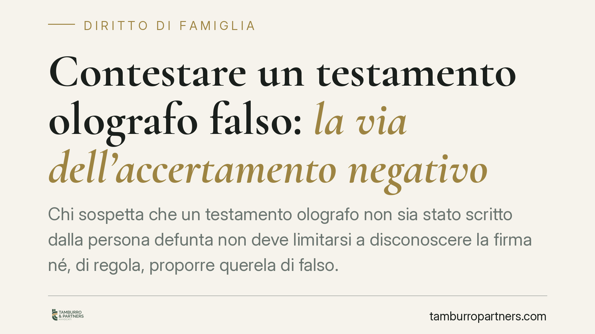

Contestare un testamento olografo falso: la via dell'accertamento negativo
Chi sospetta che un testamento olografo non sia stato scritto dalla persona defunta non deve limitarsi a disconoscere la firma né, di regola, proporre querela di falso. Le Sezioni Unite hanno chiarito la strada corretta: l'azione di accertamento negativo della provenienza, con onere della prova a carico di chi contesta. Un passaggio tecnico che decide l'esito del giudizio ereditario.

Il problema: come si contesta un testamento scritto da altri
Capita spesso. Alla morte di un familiare compare un testamento olografo — cioè scritto a mano, datato e firmato dal testatore — che esclude alcuni eredi o favorisce un singolo soggetto. Chi resta fuori sospetta che la scheda non sia autentica: scritta da altri e attribuita falsamente al defunto.
La domanda operativa è una sola: con quale strumento processuale si contesta quella scheda? La risposta non è intuitiva e, se sbagliata, può costare la causa.
Inquadramento normativo: due piani da non confondere
Occorre distinguere nettamente due situazioni diverse, che spesso vengono erroneamente sovrapposte.
Primo piano — i vizi di forma (art. 606 c.c.). L'articolo 606 del Codice civile disciplina i difetti formali del testamento. Il comma 1 prevede la nullità quando manca l'autografia (il testo non è scritto di pugno dal testatore) o la sottoscrizione. Il comma 2 prevede l'annullabilità per ogni altro difetto di forma, ad esempio un vizio della data. Questo articolo riguarda i requisiti formali dell'atto, non la falsità materiale.
Secondo piano — la falsità, cioè la contestazione della paternità. Quando non si discute della forma ma si afferma che la scheda, pur formalmente completa, è stata scritta da una persona diversa dal testatore, il problema è di autenticità/provenienza. Qui interviene la giurisprudenza.
Le Sezioni Unite della Cassazione, con la sentenza n. 12307 del 15 giugno 2015, hanno stabilito che chi contesta l'autenticità di un testamento olografo deve proporre una domanda di accertamento negativo della provenienza della scrittura. Non basta il semplice disconoscimento previsto per le scritture private ordinarie, perché il testamento è destinato a produrre effetti dopo la morte di chi lo ha formato e circola come documento efficace. Al tempo stesso, non è di norma necessaria la querela di falso.
Perché non il disconoscimento e non (di regola) la querela di falso
Il mero disconoscimento della scrittura — tipico delle scritture private — è stato ritenuto inadeguato dalle Sezioni Unite: scaricherebbe sull'erede beneficiato l'onere di dimostrare l'autenticità, invertendo gli equilibri.
La querela di falso, dal canto suo, non è riservata ai soli atti pubblici: è ammessa anche per le scritture private riconosciute o verificate. Ma le Sezioni Unite hanno indicato come percorso ordinario quello, più lineare, dell'azione di accertamento negativo. Il punto centrale, e decisivo in giudizio, è un altro: l'onere della prova grava su chi contesta. È il contestatore che deve dimostrare la non autenticità della scheda, tipicamente attraverso una consulenza tecnica grafologica, ed è a suo carico anche la produzione dell'originale del testamento.
Implicazioni pratiche per gli eredi
Chi vuole far valere la falsità deve organizzarsi su tre fronti concreti.
Primo: non confidare nel disconoscimento come scorciatoia. Impostare la domanda come accertamento negativo della provenienza.
Secondo: prepararsi a sostenere l'onere probatorio. Serve materiale comparativo — scritti sicuramente autografi del defunto — su cui il consulente grafologo possa lavorare. Senza prova, la contestazione cade.
Terzo: reperire e produrre l'originale della scheda testamentaria. La copia non basta per una verifica grafologica attendibile.
Sul versante dei termini, attenzione a non confondere i diversi strumenti. L'azione di petizione ereditaria (art. 533 c.c.), con cui l'erede rivendica i beni, è imprescrittibile, salvi gli effetti dell'eventuale usucapione da parte di chi possiede i beni. Diversa è l'azione di riduzione (artt. 553 e ss. c.c.), esperibile dal legittimario leso, soggetta a prescrizione decennale. Individuare l'azione corretta, e il relativo termine, è parte essenziale della strategia.
Cosa fare in concreto
- Verificate subito quale sia l'obiettivo reale: contestare la forma dell'atto (art. 606 c.c.) o la sua paternità (accertamento negativo). Sono percorsi diversi.
- Raccogliete gli scritti autografi del defunto da usare come campioni di comparazione prima che vadano dispersi.
- Reperite l'originale del testamento olografo: la produzione dell'originale è a carico di chi contesta.
- Fate valutare la fattibilità da un consulente grafologo prima di avviare la causa, per misurare la solidità della contestazione.
- Mappate i termini dell'azione pertinente al vostro caso, distinguendo petizione ereditaria e riduzione.
Nessun orientamento, per quanto consolidato, garantisce di per sé un esito favorevole: l'accertamento della falsità dipende dalle prove concretamente disponibili.
Contributo informativo a cura di Tamburro & Partners - Avv. Giuseppe Tamburro. Non costituisce parere legale.
Ogni famiglia ha il suo equilibrio.
Separazione, divorzio, affidamento, assegno: se vuoi un confronto riservato su una specifica situazione, scrivi allo studio. Ti rispondiamo entro un giorno lavorativo.